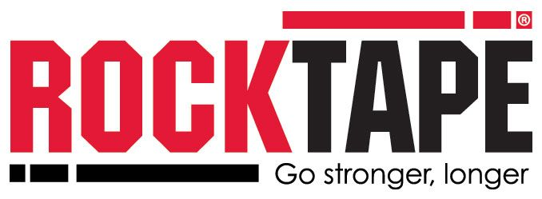

Move Better. Recover Stronger.
Personalised sports therapy and rehabilitation designed to relieve pain, restore mobility, and help you return to confident movement.



How we can help
From recovery massage to full injury assessment — treatment built around your body, not a one-size routine.
Sports & Deep Tissue Massage
Targeted muscle work to ease tension, speed recovery, and keep you training.
Learn more →Injury Treatment & Assessment
A full assessment and hands-on treatment plan for injuries old and new.
Learn more →Injury Follow-Up
Ongoing rehab sessions to track progress and keep you moving forward.
Learn more →Rocktape Application
Kinesiology taping to support muscles and joints between sessions.
Learn more →Benefits of regular treatment
Why choose James
Degree-backed expertise
BSc Sports Science (2012), qualified Soft Tissue Therapist (2014) and qualified Sports Therapist (2024).
Trusted by serious athletes
From powerlifters lifting 170kg+ to three seasons of pitch-side first aid with Broadstreet RFC, a National 3 Midlands Premier rugby team.
Accredited & CPD-current
Member of the Institute of Sport and Remedial Massage Therapists and the Sports Therapy Organisation, with annual CPD.
Specialist toolkit
Qualified RockDoc kinesiology taping and Instrument-Assisted Sports Massage, alongside hands-on manual therapy.
James has worked miracles for my plantar fasciitis. He is skilful, knowledgeable and has got me back running again in no time.
Hawkstone House, Portland Mews
Leamington Spa, CV32 5HD
Tue 2–8pm · Wed 10–8pm
Sun 8am–2pm · Fri–Sat closed